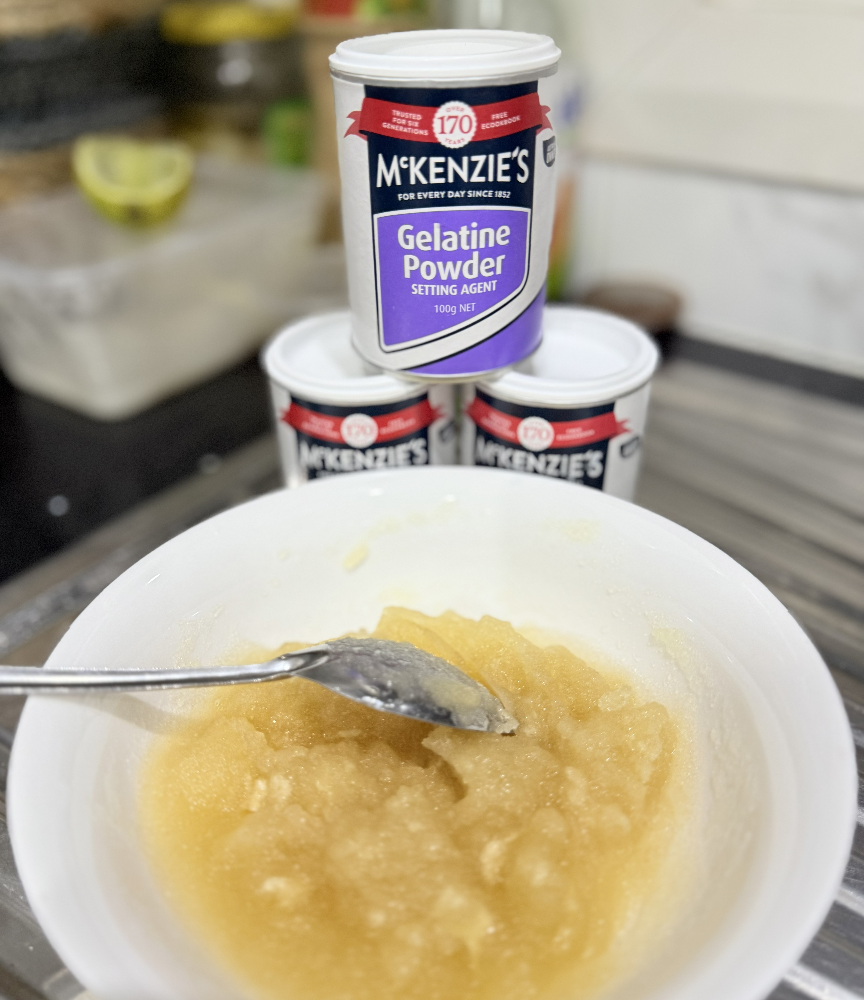
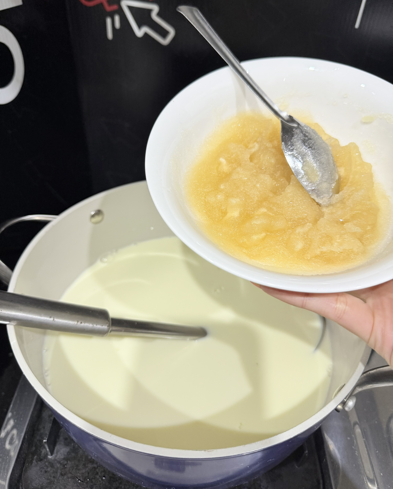
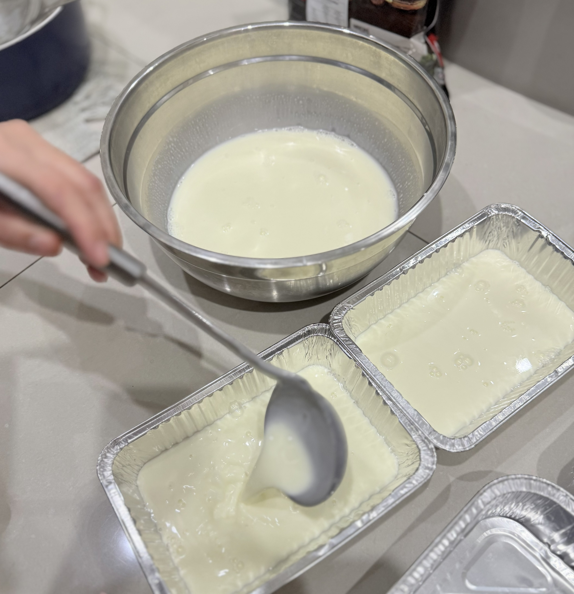

Ingredients:
A2 full cream milk (600 mL)
Whipping cream (600 mL)
Sugar (160 g)
Almond slices (50-100 g)
Rock Sugar (2-3 cubes)
Gelatine (50 g)
Green tea powder (2-3 g)
Unsweetened cocoa powder (5-6 g)
Strawberry jam (1-2 tablespoons)
Instructions:
Step1: Soak 50g gelatin in cold water for 5-10 minutes to bloom.

Step2: In a pot, heat milk + whipping cream + sugar (do not boil it hot juyst make the mixture warm). When warm, add gelatin and stir until dissolved. When the gelatin does not dissolve completely (there are still some small pieces), we can use a sieve to make the mixture smoother.

Step3: Pour into 4 molds or any containers you want. So, we have the first molds of original flavour for the dessert. You can make more flavours as you like! You can do with me next these favours: Green Tea (green), Cocoa (brown), and Strawberry (Pink).

Step4: To do the flavours in the same way. Green tea (powder) uses 2-3g with 2-3 tablespoons of boiled water (~70-80'C) and stir well; Cocoa powder (Use unsweetened cocoa powder 100% pure, avoid sweetened cocoa drinks like Milo or another) uses 5-6g with 2-3 tablespoons of boiled water and stir well; Strawberry jam uses 1-2 tablespoons of jam.
 +
+ 
Step5: Put each flavour into the original molds and stir well.
 ➞
➞ 
Step6: Let cool, then refrigerate for 2-3 hours until set.Then cut into small cubes.
 ➞
➞ 
Step6: Boil 500 mL water with rock sugar for the syrup. Let it cool, then add lychee or longan in it.

Finally, You put panna cotta cubes + syrup into a bowl. Top with roasted almond slices. Add ice if you prefer it cold, and serve for your family now!!
 + +
+ +  ➞
➞